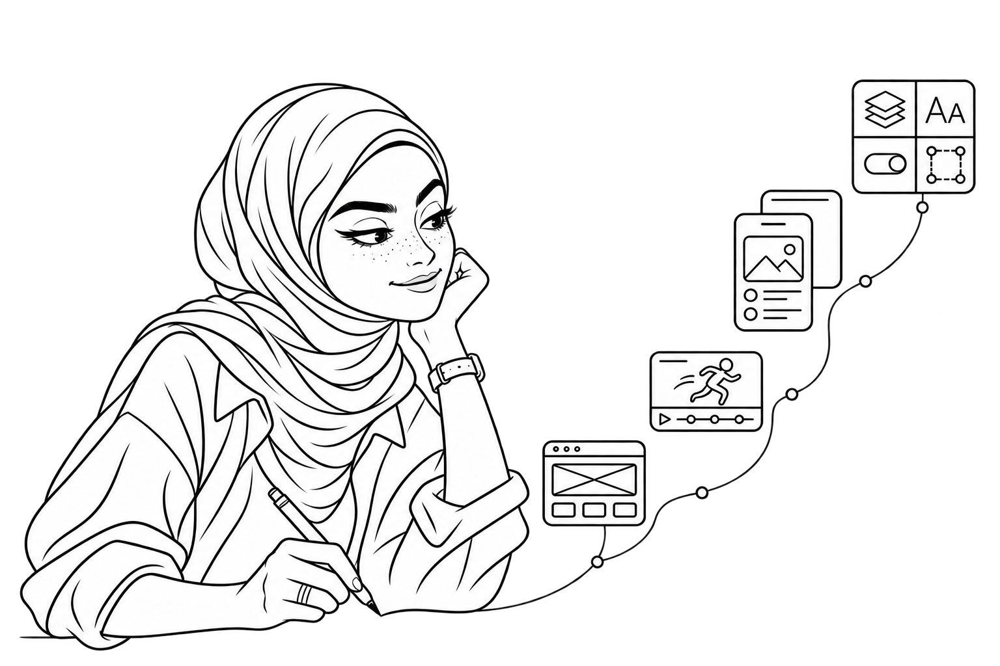

⌘
First, I made things move.
My story began with websites, visual interfaces and Flash animation. Designing for the web taught me how structure and movement can bring an idea to life.
WEB DESIGN · ANIMATION · VISUAL FOUNDATIONSUI/UX DESIGNER · DESIGN SYSTEMS · EDUCATOR
I’m Sara. I turn complex problems into intuitive experiences — one question, one sketch, one thoughtful decision at a time.
Explore my work ↘Download CV ↗ Claude
Claude
My story began with websites, visual interfaces and Flash animation. Designing for the web taught me how structure and movement can bring an idea to life.
WEB DESIGN · ANIMATION · VISUAL FOUNDATIONSLearning, exploring and moving into product design changed my focus. Who is using this? What do they need? How can the next step feel effortless?
CONTINUOUS LEARNING · UX · PRODUCT DESIGNFrom government systems and digital services to AI-powered products, I turn complex problems into clear, intuitive experiences. My work spans product design, scalable design systems and leading design teams.
COMPLEX PRODUCTS · DESIGN SYSTEMS · LEADERSHIPExplore website experiences and a feature redesign — from the final interfaces to the stories behind the decisions.
Research, design decisions and the complete story.
Explore each website directly inside its mockup.

Scroll inside the mockup to explore the complete design.
Scroll inside the mockup to explore the complete design.
Scroll inside the mockup to explore the complete design.
Scroll inside the mockup to explore the complete design.
Scroll inside the mockup to explore the complete design.
Visit Osimah website ↗I enjoy building the foundations that help teams design consistently and grow with confidence — from Figma variables and tokens to reusable components and developer handoff.
FOUNDATIONS → TOKENS → COMPONENTS
As a UI/UX instructor, I share how to choose thinking tools, make sense of information architecture, and understand the different roles of card sorting and tree testing.